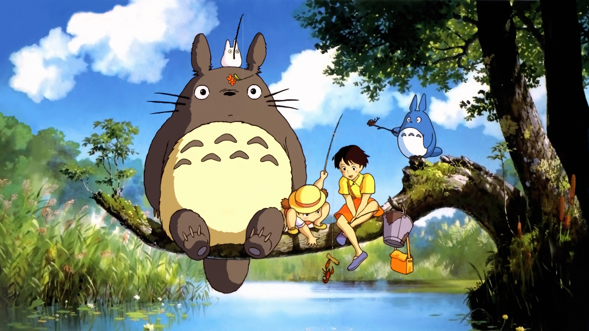
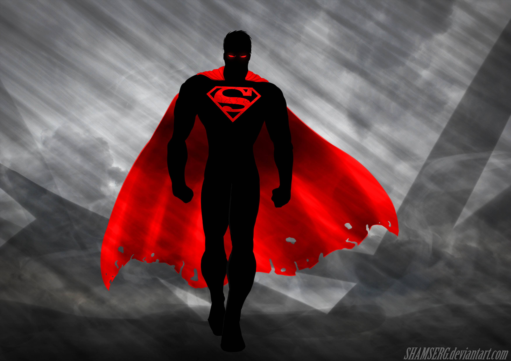

My Neighbor Totoro
(Japanese: となりのトトロ, Hepburn: Tonari no Totoro) is a 1988 Japanese animated fantasy film written and directed by Hayao Miyazaki and animated by Studio Ghibli for Tokuma Shoten. The film stars voice actors Noriko Hidaka, Chika Sakamoto, and Hitoshi Takagi, and tells the story of a professor's young daughters Satsuki and Mei, and their interactions with friendly wood spirits in postwar rural Japan. 人類社会のすべての構成員の固有の尊厳と平等で譲ることのできない権利とを承認することは
Superman
Superman is a superhero who appears in American comic books published by DC Comics. The character was created by writer Jerry Siegel and artist Joe Shuster, and debuted in the comic book Action Comics #1 (cover-dated June 1938 and published April 18, 1938).[1] Superman has been adapted to a number of other media, which includes radio serials, novels, films, television shows, theater, and video games. Superman was born on the fictional planet Krypton and was named Kal-El. As a baby, his parents sent him to Earth in a small spaceship moments before Krypton was destroyed in a natural cataclysm. His ship landed in the American countryside, near the fictional town of Smallville. He was found and adopted by farmers Jonathan and Martha Kent, who named him Clark Kent. Clark began developing his various superhuman powers and abilities, such as incredible strength and impervious skin. His adoptive parents advised him to use his powers for the benefit of humanity, and he decided to use his powers to fight crime. To protect his personal life, he changes into a colorful costume and uses the alias "Superman" when fighting crime. Clark resides in the fictional American city of Metropolis, where he works as a journalist for the Daily Planet. Superman's supporting characters include his love interest and fellow journalist Lois Lane, Daily Planet photographer Jimmy Olsen and editor-in-chief Perry White, and his enemies include Brainiac, General Zod, Darkseid, and his archenemy Lex Luthor.
Jurassic Park

Jurassic Park, later also referred to as Jurassic World,[1] is an American science fiction media franchise created by Michael Crichton and centered on a disastrous attempt to create a theme park of cloned dinosaurs. It began in 1990 when Universal Pictures and Amblin Entertainment bought the rights to Crichton's novel Jurassic Park before it was published. The book was successful, as was Steven Spielberg's 1993 film adaptation. The film received a theatrical 3D re-release in 2013,[2] and was selected in 2018 for preservation in the United States National Film Registry by the Library of Congress as being "culturally, historically, or aesthetically significant". A 1995 sequel novel, The Lost World, was followed by a film adaptation in 1997. Subsequent films in the series from Jurassic Park III (2001) onward are not based on novels by Crichton.